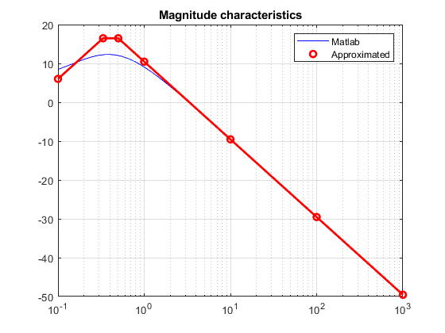

Contents
Bode magnmitude and phase characteristics calculator
clear all;
H_a(1) = zpk([],[-3], 10);
H_a(2) = zpk([-70],[-20],0.2);
H_a(3) = zpk([0],[-7],2);
H_a(4) = zpk([],[0 -7],20);
H_a(5) = zpk([],[0 -1/7],5/7);
H_a(6) = zpk([],[-1 -10],75);
H_a(7) = zpk([-2],[-1/3 -1/2], 2/6);
H_a(8) = zpk([-1/10],[-1/3 -1/2], 2*10/6);
H_a(9) = zpk([-2],[-5, -10], 20);
for id = 1:9
H = H_a(id);
wmin =-1;
wmax = 3;
z = abs(cell2mat(H.Z));
p = abs(cell2mat(H.P));
k = k_cal(H,z,p);
wma = wma_cal(z,p,k, wmin, wmax);
m = zeros(length(wma)-1,1);
[m,wma] = mag_cal(wma,m,k);
plot_app(H,wma,m);
end
Functions:
function k = k_cal(H,z,p)
if length(z) ~= 0
for i = 1:length(z)
if z(i) == 0
z_k(i) = 1;
else
z_k(i) = z(i);
end
end
else
z_k = 1;
end
if length(p) ~= 0
for i = 1:length(p)
if p(i) == 0
p_k(i) = 1;
else
p_k(i) = p(i);
end
end
else
p_k = 1;
end
k = H.K*prod(z_k)/prod(p_k);
end
function wma = wma_cal(z,p,k, wmin, wmax)
aux = wmin:wmax;
wma = 10.^aux;
wma = [wma' zeros(length(wma),1)];
z = [z ones(length(z),1)];
p = [p ones(length(p),1)*(-1)];
zap = [z; p];
zap = sortrows(zap);
wma = [wma ; zap];
wma = sortrows(wma);
for i= 1:length(wma)-1
if wma(i,1) == wma(i+1,1)
if wma(i,2) == 0
wma = [wma(1:i-1,:); wma(i+1:end,:)];
else
wma = [wma(1:i,:); wma(i+2:end,:)];
end
break
end
end
end
function [m,wma] = mag_cal(wma,m,k,type)
if wma(1,1) == 0
coeff = wma(1,2)*20;
m(1) = 20*(log10(k))*3;
wma = wma(2:end,:);
else
coeff = 0;
m(1) = 20*log10(k);
end
for i = 2:length(wma)
coeff = coeff + wma(i-1,2)*20;
m(i) = m(i-1) + coeff*log10(wma(i,1)/wma(i-1,1));
end
end
function plot_app(H,wma,m)
[m_b,f_b,w_b] = bode(H,{wma(1,1),wma(end,1)});
figure;
semilogx(w_b,20*log10(squeeze(m_b)),"b");
hold all;
for i=1:length(m)
semilogx(wma(i,1),m(i),'ro', 'LineWidth',2);
end
semilogx(wma, m, 'r-', "LineWidth",2);
hold off;
legend("Matlab", "Approximated");
title('Magnitude characteristics');
grid;shg;
end
Warning: Negative data ignored
Warning: Negative data ignored
Warning: Negative data ignored
Warning: Negative data ignored
Warning: Negative data ignored
Warning: Negative data ignored
Warning: Negative data ignored
Warning: Negative data ignored
Warning: Negative data ignored
